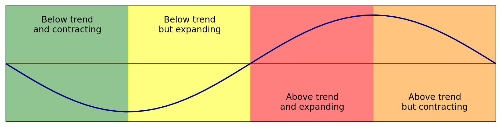
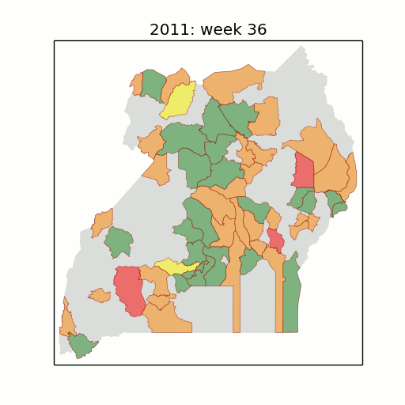

(the gray area means that the signal is too weak in comparison to the noise)
(the gray area means that the signal is too weak in comparison to the noise)
I work closely with Makerere University and the UN Pulse Lab, in Uganda, to model malaria incidence across the country.
Gaussian process models are a natural approach for analyzing functions that represent time series. The use of covariance kernels enable to analyse non-linear patterns by embedding an inference problem into an abstract space with a convenient structure. By combining different covariance kernels, a Gaussian process is able to describe complex functions. Each of the individual kernels contributes by encoding a specific set of properties or pattern of the resulting function.
As part of our research, we organized a Gaussian Process Roadshow (2013), in Kampala, Uganda.
We have been working on a monitoring model, based on signal decompositon, that can be used as an early warning system. The idea is to focus on the short-term changes of the infection time series and identify in which stage (out of four) they are: 
It works like this with real data:
(the gray area means that the signal is too weak in comparison to the noise)
Here it is applied to the whole country:
